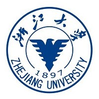
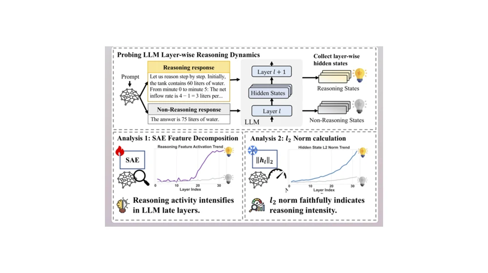
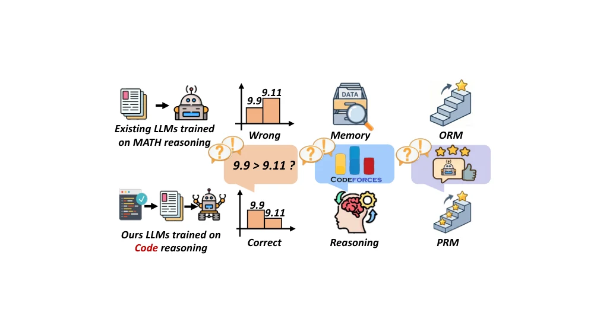
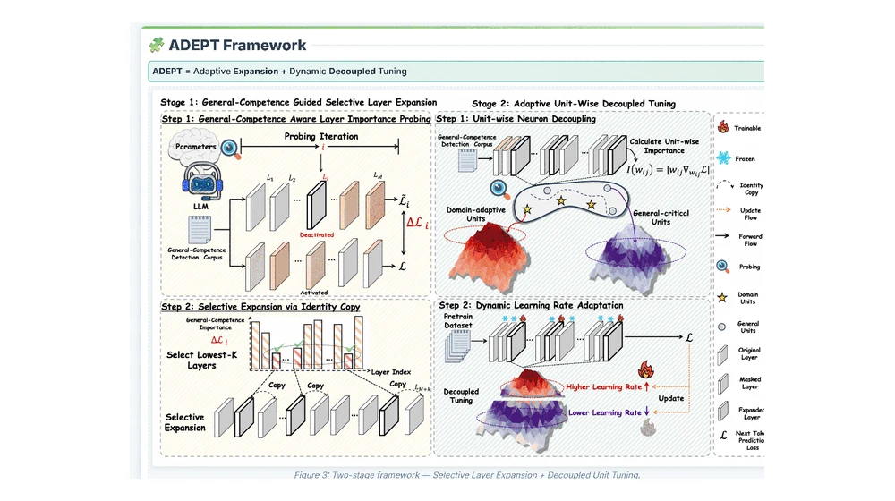
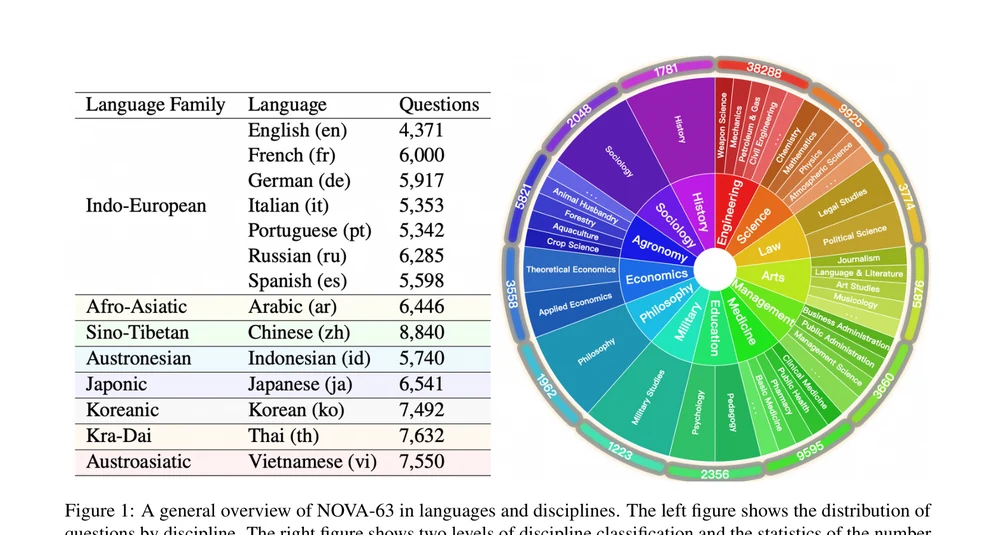
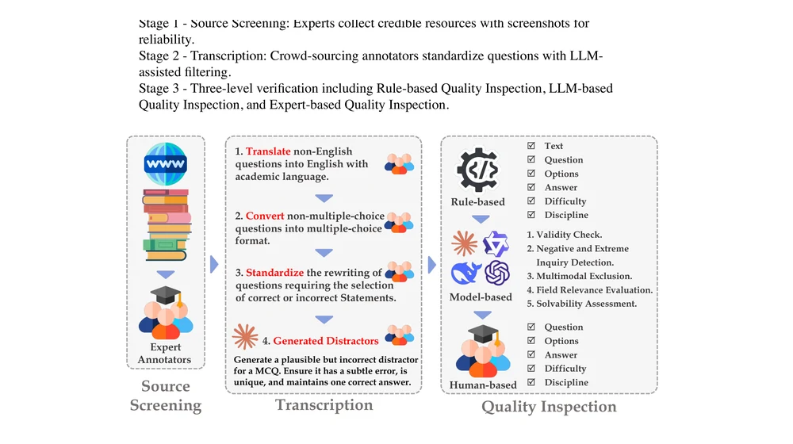
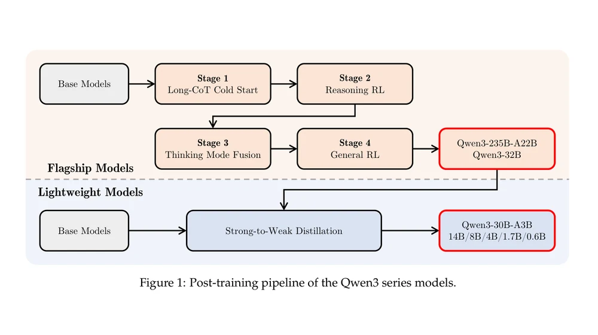

北京大学Peking University
计算机学院，硕士研究生 · 森智实验室（CENTRAi）M.S. in Computer Science · CENTRAi Lab
你好，我是章锦阳，目前是北京大学计算机学院森智实验室（CENTRAi）的硕士研究生，导师是赵俊峰老师和王亚沙老师。
Hi, I am Jinyang Zhang, an M.S. student at the CENTRAi Lab, School of Computer Science, Peking University, advised by Prof. Junfeng Zhao and Prof. Yasha Wang.
在此之前，我在浙江大学获得计算机科学与技术学士学位。我的研究主要关注大语言模型的数据与模型架构，包括训练数据合成与筛选、推理数据构造、持续预训练，以及模型结构的高效适配。自 2024 年 10 月起，我在阿里巴巴通义千问基模预训练团队参与研究，并从 Qwen3 系列开始参与相关工作。
Previously, I received my B.Eng. in Computer Science and Technology from Zhejiang University. My research focuses on data and model architectures for large language models, including training data synthesis and selection, reasoning data construction, continual pretraining, and efficient architectural adaptation. Since October 2024, I have worked with the Foundation Model Pretraining Team at Alibaba Qwen, contributing from the Qwen3 series onward.
计算机学院，硕士研究生 · 森智实验室（CENTRAi）M.S. in Computer Science · CENTRAi Lab

计算机科学与技术，本科 · 竺可桢学院工程教育高级班，获工高班荣誉证书B.Eng. in Computer Science and Technology · Advanced Engineering Education Program, Chu Kochen Honors College, with Honors Certificate
总均绩 4.90/5，主修课程均绩 4.97/5，专业排名 1/497。Overall GPA 4.90/5, major GPA 4.97/5, ranked 1st among 497 students.
特别感谢林兰芬老师在本科阶段给予我的指导与帮助。I am especially grateful to Prof. Lanfen Lin for her guidance and support during my undergraduate study.
选取几项最能代表当前研究方向的工作。A few projects representative of my current research.
第一作者First author
从 L2 范数出发研究潜在推理的内生信号，并探索无需训练的推理干预方法。
Studies L2 magnitude as an intrinsic signal of latent reasoning and explores training-free reasoning interventions.

第一作者First author
利用代码执行的中间状态，构造规模化、可验证的推理训练数据。
Uses intermediate program states to synthesize verifiable reasoning data at scale.

第一作者First author
通过选择性层扩展与动态解耦调优，研究高效的领域持续预训练。
Studies efficient domain continual pretraining through selective layer expansion and dynamically decoupled tuning.

第一作者First author
面向 63 个学科构建多语言、全学科原生评测基准。
A native multilingual benchmark spanning 63 academic disciplines.

贡献者Contributor
覆盖 285 个研究生学科的大规模专业知识评测基准；参与题目、分类体系与 Benchmark 构建。
A large-scale benchmark spanning 285 graduate disciplines; contributed questions, taxonomy design, and benchmark construction.

贡献者Contributor
参与题库标签设计、思维链与非常规推理数据合成、长尾知识数据增强及 Agent 轨迹合成。
Contributed to taxonomy design, chain-of-thought and unconventional reasoning synthesis, long-tail knowledge augmentation, and agent trajectory synthesis.

按时间倒序排列；作者列表中我的姓名以粗体标出。Reverse chronological order; my name is shown in bold.
Jinyang Zhang, Weibin Liao, Keqin Bao, Sihang Li, Shaobo Wang, Muyang Ye, Hongxin Ding, Yue Fang, Tianyi Tang, Fei Huang, Kexin Yang, Xingzhang Ren, Dayiheng Liu
Jinyang Zhang, Hongxin Ding, Yue Fang, Weibin Liao, Muyang Ye, Junfeng Zhao, Yasha Wang
Hongxin Ding, Baixiang Huang, Yue Fang, Weibin Liao, Xinke Jiang, Jinyang Zhang, Yinghao Zhu, Zheng Li, Liantao Ma, Junfeng Zhao, Yasha Wang
Ru Peng, Tianyu Zhao, Xijun Gu, Zhiting Fan, Haokai Xu, Jinyang Zhang, Yawen Zeng, Yihong Zhuang, Kexin Yang, Junyang Lin, Dayiheng Liu, Junbo Zhao
Ru Peng, Jinyang Zhang, Yawen Zeng, Kexin Yang, Junyang Lin, Haobo Wang, Gang Chen, Jinren Zhou, Dayiheng Liu, Junbo Zhao
Jinyang Zhang, Yue Fang, Hongxin Ding, Weibin Liao, Muyang Ye, Junfeng Zhao, Yasha Wang, Xu Chu
Xeron Du, Yifan Yao, Kaijing Ma, Bingli Wang, Tianyu Zheng, …, Jinyang Zhang, et al.
Jinyang Zhang, Kexin Yang, Yu Wan, Muyang Ye, Yue Fang, Baosong Yang, Fei Huang, Junyang Lin, Dayiheng Liu
Hongxin Ding, Yue Fang, Runchuan Zhu, Xinke Jiang, Jinyang Zhang, Yongxin Xu, Weibin Liao, Xu Chu, Junfeng Zhao, Yasha Wang
Qwen Team · 贡献者：Contributor: Jinyang Zhang
通用基座模型预训练 · 研究型实习生 · 从 Qwen3 系列开始参与Foundation Model Pretraining · Research Intern · Contributing since the Qwen3 series
北京大学中文医疗大模型Chinese medical language model developed at Peking University
将 ADEPT 持续预训练技术应用于医疗领域模型。Applied ADEPT continual-pretraining techniques to a medical-domain model.
北京大学研究生国家奖学金National Graduate Scholarship, Peking University
商汤奖学金SenseTime Scholarship
本科生国家奖学金（两次）National Scholarship for Undergraduate Students (twice)
浙江大学一等奖学金、郭以连教育奖学金、何志均教育基金学生奖学金Zhejiang University First-Class Scholarship, Guo Yilian Scholarship, and He Zhijun Scholarship
如希望交流研究或合作，欢迎邮件联系。For research discussions or collaboration, feel free to get in touch.
jinyangzhang25@stu.pku.edu.cn